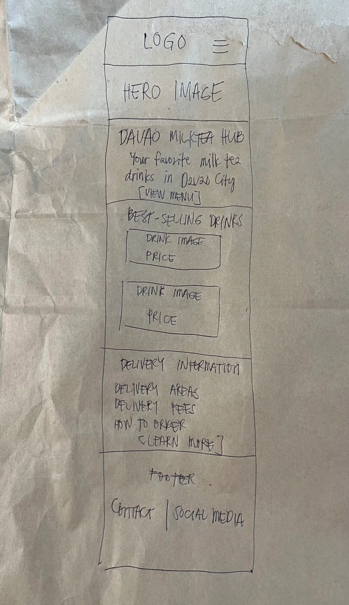
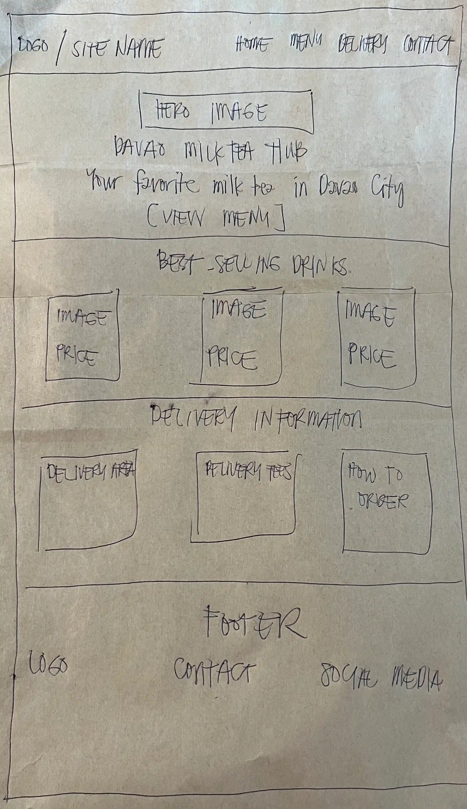

1. Site Name
Davao Milk Tea Hub
The name Davao Milk Tea Hub was selected because the website will focus on a local milk tea store in the Davao City area. The word "Hub" represents a place where customers can discover popular milk tea drinks, learn about the store, and find useful delivery information.
Optional domain: davao-milktea-hub.com
2. Site Purpose
The website will provide information about a local milk tea store, including its best-selling drinks, store information, and delivery areas. It will help customers discover popular milk tea choices and understand delivery availability and additional delivery fees.
The planned website will contain three main pages:
- Home – Introduction to the store and featured information.
- Menu – Best-selling milk tea drinks and other popular choices.
- Delivery – Delivery areas, fees, and delivery information.
3. Scenarios
The following questions represent common questions that visitors may have when visiting the website:
- What are the best-selling milk tea drinks available at the store?
- Does the store deliver to my area, and how much is the delivery fee?
- Where can I find information about the store and its available drinks?
- What milk tea should I try if I am ordering from the store for the first time?
4. Color Scheme
The color scheme uses warm brown, cream, and soft pink tones to create a welcoming appearance that relates to milk tea and a comfortable café atmosphere.
#6B4226
Milk Tea Brown
Used for headings, navigation elements, and important accents.
#FFF8EE
Cream
Used as the primary page background.
#E8A0A8
Soft Pink
Used for buttons, highlights, and decorative accents.
#2F241F
Dark Brown
Used for body text to provide readable contrast.
5. Typography
Poppins
Poppins will be used for headings, navigation, buttons, and important labels. Its clean and modern appearance will help create a friendly visual style for the website.
Open Sans
Open Sans will be used for paragraphs and other body content. It provides good readability on both desktop and mobile screens.
Best-Selling Milk Tea
Discover some of the most popular milk tea drinks available at the store.
6. Wireframe
The following wireframes show the planned responsive layout of the home page for small and large viewports.

